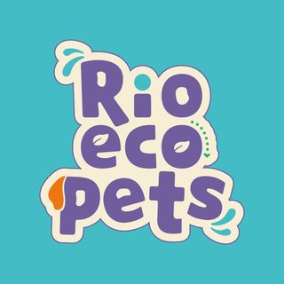
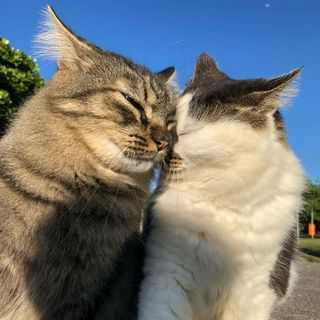
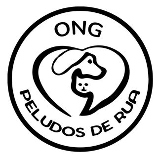

A Sociedade Niteroiense de Proteção Animal é uma organização voluntária que trabalha há mais de 20 anos na defesa da causa animal.

Rio Eco Pets
Instituto sem fins lucrativos, pioneiro no RJ, coleta tampas plásticas e lacres para reciclagem e doa o valor a ONGs e protetores de animais desde 2018.
Projeto Recicão
Grupo de volutários que recolhe diferentes itens de recicláveis para venda, todo o lucro é doado para causa animal.

Classifigatos
Página no Instagram dedicada à divulgação de gatinhos à procura de adoção, conectando protetores e interessados em oferecer um novo lar para os felinos.

Peludos de Rua
Resgate e reabilitação de cães com adoção responsável para lares selecionados, garantindo um ambiente seguro e adequado para cada animal.
Casa do Cão & Gato
Resgate, reabilitação e adoção responsável de cães, com seleção cuidadosa de lares para garantir um ambiente seguro e adequado.